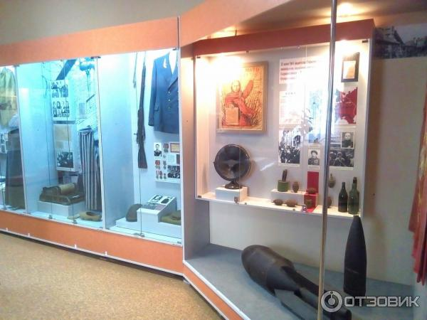
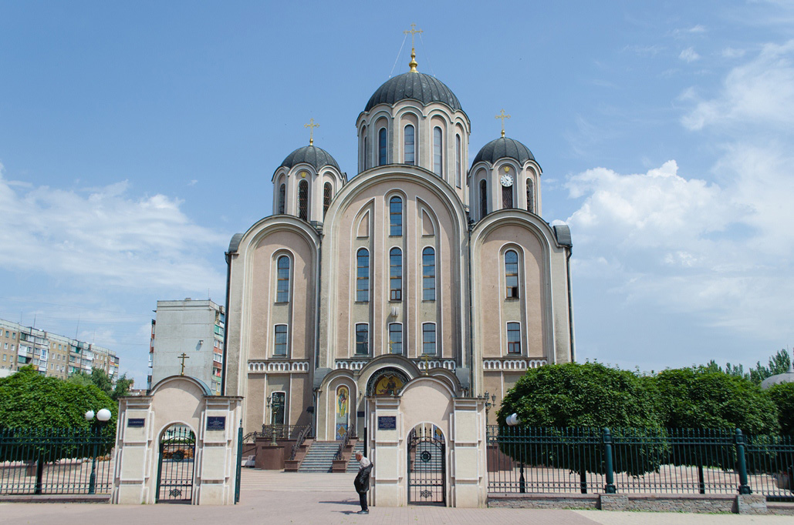

Исторический музей
Макеевский городской исторический музей - здесь можно изучить богатую историю и культуру города, увидеть экспонаты, связанные с добычей полезных ископаемых и развитием промышленности в разных странах.

Макеевский городской исторический музей - здесь можно изучить богатую историю и культуру города, увидеть экспонаты, связанные с добычей полезных ископаемых и развитием промышленности в разных странах.
История: Парк «Культуры и отдых» был основан в 1959 году и до сих пор является одной из главных достопримечательностей Макеевки. За свою историю парк неоднократно реконструировался и расширялся, чтобы предложить посетителям больше развлечений и удобств. Расположение и площадь: Парк расположен в центре города Макеевка и занимает площадь около 27 гектаров. Благодаря удобному расположению парк легко доступен как для местных жителей, так и для туристов. Аттракционы: В парке есть разнообразные аттракционы и развлечения для посетителей всех возрастов. Среди них можно найти городок аттракционов, карусели, аттракционы «Колесо обозрения», водные горки, игровые площадки и другие развлечения. Подземный музей «Макеевка города победы»: Единственным из контуров парка является наличие подземного музея, посвященного истории Второй мировой войны и героическому прошлому города. В экспозиции представлены экспозиции, фотографии, аудиовизуальные материалы, которые рассказывают о подвигах местных жителей во время войны. Зеленые зоны: Парк славится своими красивыми зелеными зонами, декоративными садами, фонтанами, аллеями и прогулочными дорожками. Здесь можно насладиться природой, провести пикник или просто спокойно погулять. Спортивные объекты: В парке есть также спортивные площадки и площадки, где можно заниматься спортом и активно проводить время. Среди футбольных полей, теннисных кортов, баскетбольных и волейбольных площадок. Рестораны и кафе: Внутри парка есть несколько ресторанов, кафе и площадок для отдыха, где можно отведать различные блюда украинской и уличной кухни, а также насладиться прекрасным видом на парк.
 Свято-Георгиевский Собор в Макеевке, Донецкая область, Украина, это один из исторически значимых православных храмов в регионе. Вот некоторая информация о нем: История: Свято-Георгиевский Собор был построен в начале XX века. Его строительство было завершено в 1911 году. Храм был создан в стиле русской архитектуры того времени и является одним из характерных образцов религиозной архитектуры этой эпохи. Архитектура: Собор имеет типичную для православных храмов архитектуру с куполами и иконостасом. Он олицетворяет традиционные элементы православной церковной архитектуры, включая кресты на куполах и художественные иконы внутри храма. Известные события: В течение многих лет Свято-Георгиевский Собор служил как центр духовной жизни и богослужения для местных жителей Макеевки. Он стал свидетелем различных исторических событий и служил как место молитв и обрядов для верующих. Сохранение и реставрация: Важно отметить, что в связи с событиями, связанными с конфликтом на востоке Украины в последние годы, храмы и исторические места могли подвергаться разрушению и требовать реставрации. Сохранение и восстановление таких объектов остается важной задачей для общества.
Театр Юного Зрителя был основан в городе Макеевка в далеком году основания. С самого начала своей деятельности он стал местом, где дети и подростки могли выразить свои творческие способности и развивать актерские навыки. ТЮЗ быстро стал центром образования и развития для молодых артистов, предоставляя им возможность учиться и работать под руководством опытных профессионалов в области театрального искусства. Ссылка на ВКонтакте